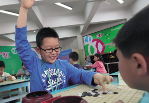

温州市首届“跳跳鱼”杯青少年五子棋锦标赛开赛
#1 温州市首届“跳跳鱼”杯青少年五子棋锦标赛开赛 作者：有志青年 发表时间：2011-5-2 20:42:42
市首届青少年五子棋锦标赛昨日开赛，很多选手下一盘棋仅耗时两分钟。
温州市首届“跳跳鱼”杯青少年五子棋锦标赛昨天上午在市少年宫开赛，来自我市各地的80余名选手参加了本届比赛。选手按年龄分为少年组和儿童组，并根据参赛总人数确定录取名次。
“五子棋比赛很快很刺激。”很多“落子如飞”的小选手赛后说。记者在现场看到，很多选手下完首轮棋局仅耗时两分钟。“我喜欢五子棋是因为它比较简单，”部分小选手表示。而在参赛的众多选手中，绝大多数选手均未经过专业五子棋培训。
“这些小选手下得太快了。不过这种现象很正常，只要经过培训，相信这些孩子下棋的速度自然就会慢下来了。”浙江省五子棋协会会长徐永伟表示，这些小选手对五子棋的理解有些偏差，这在很大程度上和他们未经过专业的五子棋培训有关。他介绍说，五子棋作为一项棋类运动，落子前同样要经过深思熟虑。在智运会等正式比赛中，一局五子棋对决的规定时间一般为2个小时30分钟左右，一些青少年高手的对局时间也同样要远远多于两分钟。“很多小选手没有记谱，在规则方面还不明了，这说明温州的五子棋运动还处于起步阶段，出现这样的情况很正常。”徐永伟表示。
本届比赛将于今天上午落幕，比赛由温州市围棋协会和温州市少年宫主办，意大利跳跳鱼鞋服国际集团有限公司协办。
［ 失落刀 于 2011-5-2 20:50:52 时花20金币送鲜花一朵］
#2 Re:温州市首届“跳跳鱼”杯青少年五子棋锦标赛开赛 作者：失落刀 发表时间：2011-5-2 20:51:32
80余名选手
#3 Re:温州市首届“跳跳鱼”杯青少年五子棋锦标赛开赛 作者：小兵 发表时间：2011-5-3 14:37:02
类似于我校内的无差别无规则选拔赛